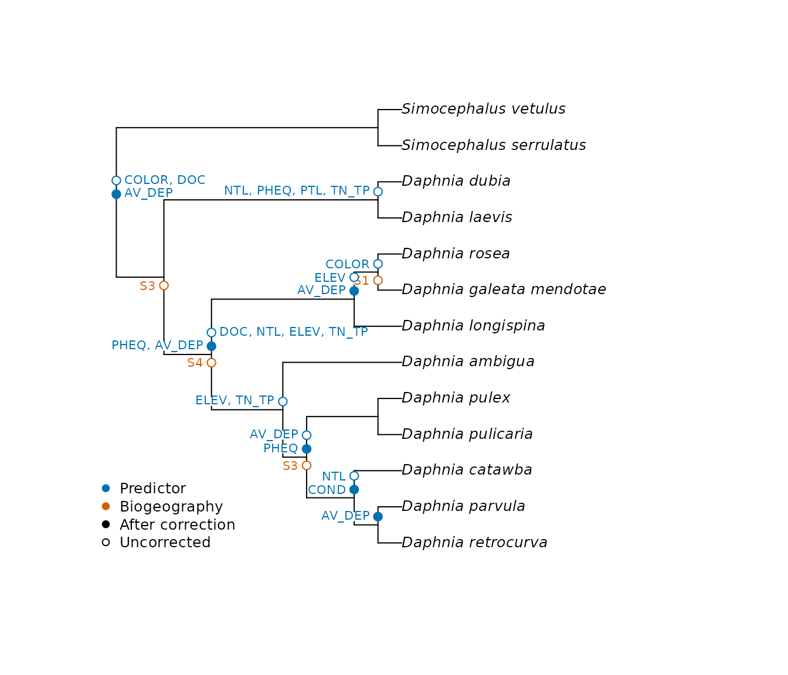
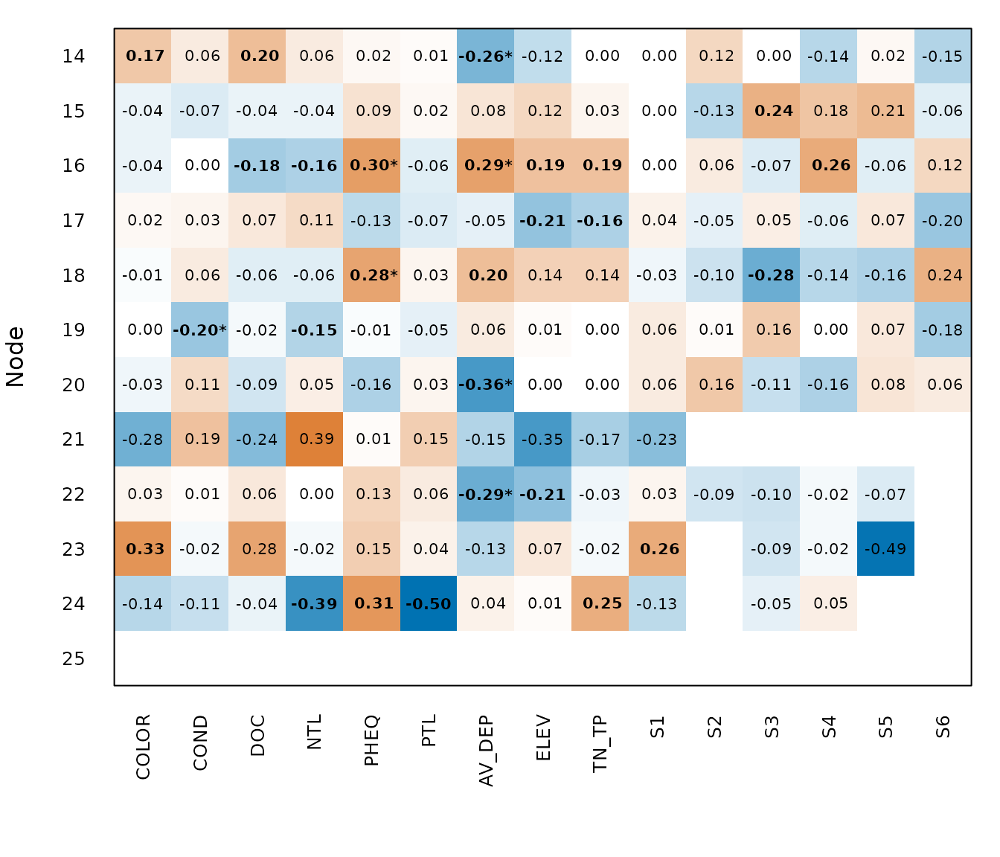

Analysing clades and traits in a metacommunity
Source:vignettes/articles/analysing-clades.Rmd
analysing-clades.RmdThis article goes through the two analyses of metacommunity phylogenetics in the package: the node regression of Leibold et al. (2010) with their daphniids, and the phylogenetic gradient analysis of Peres-Neto et al. (2012) with simulated data, which are the methods checked in the article on validation.
Which clades respond to the environment?
daphniids rebuilds the data of Leibold et al. (2010)
from the public survey: presences of 13 species in lakes of the
northeastern United States, nine predictors and six biogeographic
contrasts. node_contrasts() codes each node of the tree as
a contrast between its two clades. This tree has no branch lengths; with
them, branch_lengths = TRUE gives the coding of the
supplement of the article.
nodes <- node_contrasts(daphniids$tree)
dim(nodes)
#> [1] 13 12node_test() regresses each contrast on the predictors.
The default of 9999 permutations suits the false discovery rate. We use
999 here to keep the page quick to build, with nodes in parallel on two
cores.
set.seed(1)
out <- node_test(daphniids$comm, nodes, daphniids$env, daphniids$biogeography, n_perm = 999,
cores = 2)
out
#> <mc_node_test> 12 nodes, 11 tested
#> nodes with p (max) <= 0.05: 0 before correction, 0 afterThe p-values answer different questions, so this choice comes first.
p_max tests the association between predictors and
phylogeny, and it needs both permutations to reject. With 13 species,
permutations of species have little power, so nothing passes it here.
Permuting sites alone tests whether a predictor matters for that
contrast, whether or not that comes from phylogeny. The figures below
use sites, as this recovers most of the results of the article, and
should be read with that limit in mind.
plot_node_test() places the results on the tree, as in
Figure 3 of the article.
plot_node_test(out, daphniids$tree, test = "site")
A tree of this size reads best as a phylogram. For very large trees,
type = "fan" draws the same plot in less space.
plot_node_heatmap() gives the direction and size of each
association, as in Table S1 of the article.
plot_node_heatmap(out, test = "site")
A positive value means that the second clade of the node, in the order of the tree, is favoured where the predictor is high.
How much of the phylogenetic structure is due to environment and space?
For this question we need a tree with branch lengths and sites with coordinates, so we simulate them with the generator of Appendix C of Peres-Neto et al. (2012). In the first scenario, two independent gradients act on species.
set.seed(2)
tree <- ape::stree(32, "balanced")
tree$edge.length <- rep(1, nrow(tree$edge))
tree$tip.label <- paste0("sp", 1:32)
gradients <- logistic_gradients(1)
sim <- simulate_logistic(tree, gradients[c("x", "y")])
keep <- rowSums(sim$abundance) > 0
comm <- sim$abundance[keep, ]
comm <- comm[, colSums(comm) > 0]
x <- gradients$x[keep]
y <- gradients$y[keep]phylo_vector() tests whether a gradient is related to
the phylogeny and, if so, gives a vector of species values for the next
step. Here we ask this for each gradient.
first <- phylo_vector(comm, tree, x, n_perm = 199)
second <- phylo_vector(comm, tree, y, n_perm = 199)
c(first$p_max, second$p_max)
#> [1] 0.005 0.005trait_partition() then splits the variation of these
vectors among sites. The vectors are chosen to fit the gradients, so
this step only makes sense after a significant global test.
vectors <- cbind(first$pev_brown, second$pev_brown)
partition <- trait_partition(comm, vectors, x, y, n_perm = 199)
partition
#> <mc_trait_partition> mean component, 0.583 of the total variation
#> fraction r2 r2_adjusted r2_component p_site p_taxa p_max
#> 1 abc 0.473 0.435 0.811 0.005 0.005 0.005
#> 2 ab 0.285 0.260 0.489 0.005 0.005 0.005
#> 3 bc 0.314 0.290 0.538 0.005 0.005 0.005
#> 4 a 0.159 0.145 0.273 0.005 0.005 0.005
#> 5 b 0.126 0.115 0.216 NA NA NA
#> 6 c 0.188 0.175 0.322 0.005 0.005 0.005
#> 7 d 0.527 0.565 0.189 NA NA NA
round(partition$semipartial, 2)
#> trait1 trait2
#> env1 0.51 0.25
#> space1 0.33 0.52
plot_trait_partition(partition)The test of each trait against each predictor is a different question, for which ter Braak (2019) is the reference.
References
Leibold, M. A., Economo, E. P., & Peres-Neto, P. (2010). Metacommunity phylogenetics: separating the roles of environmental filters and historical biogeography. Ecology Letters, 13, 1290–1299. https://doi.org/10.1111/j.1461-0248.2010.01523.x
Peres-Neto, P. R., Leibold, M. A., & Dray, S. (2012). Assessing the effects of spatial contingency and environmental filtering on metacommunity phylogenetics. Ecology, 93, S14–S30. https://doi.org/10.1890/11-0494.1
ter Braak, C. J. F. (2019). New robust weighted averaging- and model-based methods for assessing trait-environment relationships. Methods in Ecology and Evolution, 10, 1962–1971. https://doi.org/10.1111/2041-210X.13278